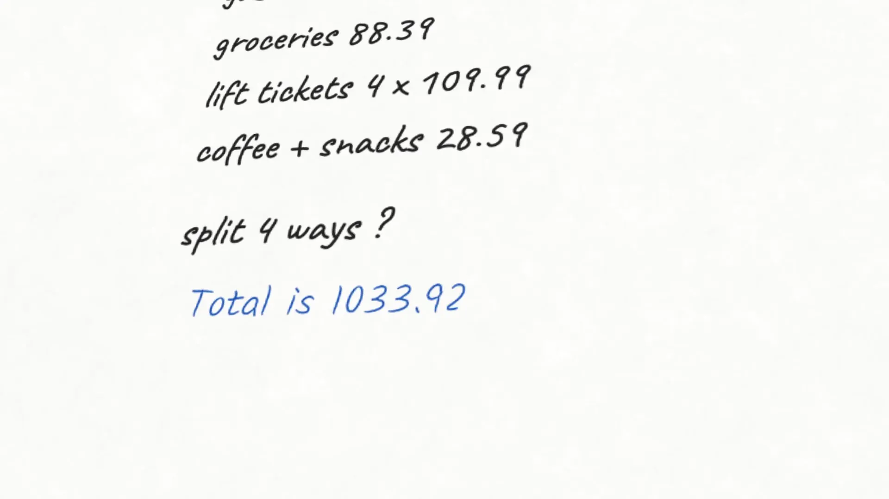
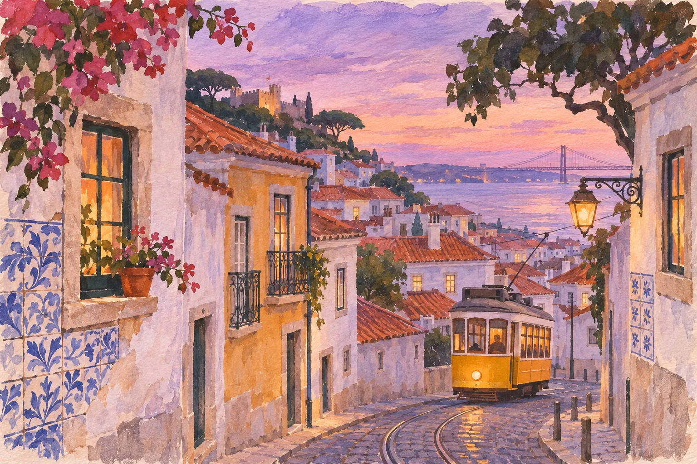

Question mark
why does dough rise?
yeast breathes out CO₂; gluten traps it.
A new way to ideate, sketch, prototype, think, plan, philosophize, brainstorm, learn, design, solve, write, imagine, explore and wonder.

Powered by Meta AI
No chat box, no prompts. A question mark, an equals sign, an empty box, a circle. Each one asks for something different.
YouMaple (AI)
Question mark
why does dough rise?
yeast breathes out CO₂; gluten traps it.
Empty box
login screen
Blank after =
75% of 486 g = 364.5 g
R = 8.314 J/(mol·K)
Two question marks
why is eiπ = −1 ??
eiθ is a turn of θ around the circle; turn by π and you land on −1.
A word with two meanings
Mercury □
the planet or the element?
Trail off
1, 1, 2, 3, 5 … 8, 13, 21
passport, keys … charger, adapter
A painting
Lisbon at dusk □

Numbers, worked out
xx = 64 ? ≈ 3.399
250 ml in cups ? 1.057 cups
Tap twice
Occam’s razor ··
pick the simplest story that still fits the facts.
Circle what you’d change
Exact text
IMO 2022 Q1 ?
The Bank of Oslo issues two types of coin: aluminium (A) and bronze (B)…
Squeeze and ask out loud
y = x²
“what’s the slope here?”
2 at x = 1: it rises 2 for every 1 across.
A computed picture
hydrogen atom □
Strike and say why
yeast breathes out CO₂; gluten traps it.
simpler
yeast makes gas; the dough holds it in.
Ask to draw
“draw me a graph of sin x”
Repaint just one part
Ask about Maple’s ink
x = eW(ln 64) ≈ 3.399
check?
3.3993.399 ≈ 64.0, so it holds.
The Me page
prefers hints before answers
likes grids over lists
new to baking
Strike a line, and Maple forgets it.